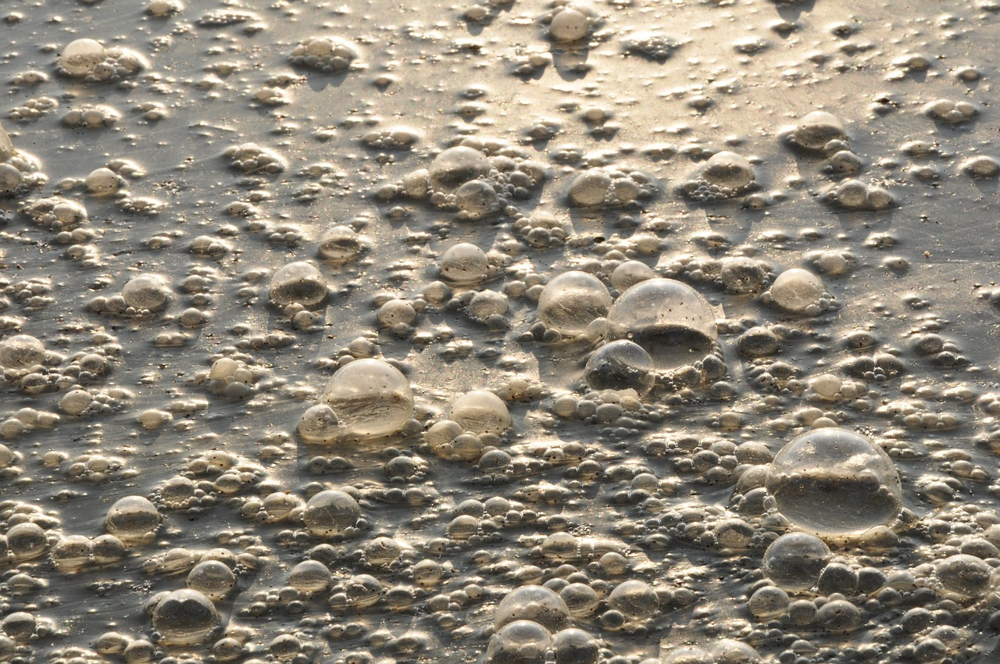

Fanciest Water

The cloudier the more particular. The more particular the less common. Hypebeast.
Imagine, if you would, a pair of dentures. Sitting there, in a glass, on some ancient bedside table.
Maybe you are imagining the dentures from Red Dragon. Those biters. Those bite marks. Criminal Evidence.
Aren't you forgetting something though? Don't they...float?
What sort of beverage is so tasty that someone would want to perpetually submerge their dentures in it?
Let's quench that posthumous thirst.
Ingredients
Bottles of Water
- Voss
- Aquafina
- Evian
- Nestle
Steps
- Pour out three quarters of water from your preferred bottle
- Pour equal parts Voss, Aquafina, Evian, Nestle, minus the brand of the preferred bottle into the preferred bottle.
- Remove Dentures
- Pat yourself on the back. The dectives haven't figured out your moon cycle yet.